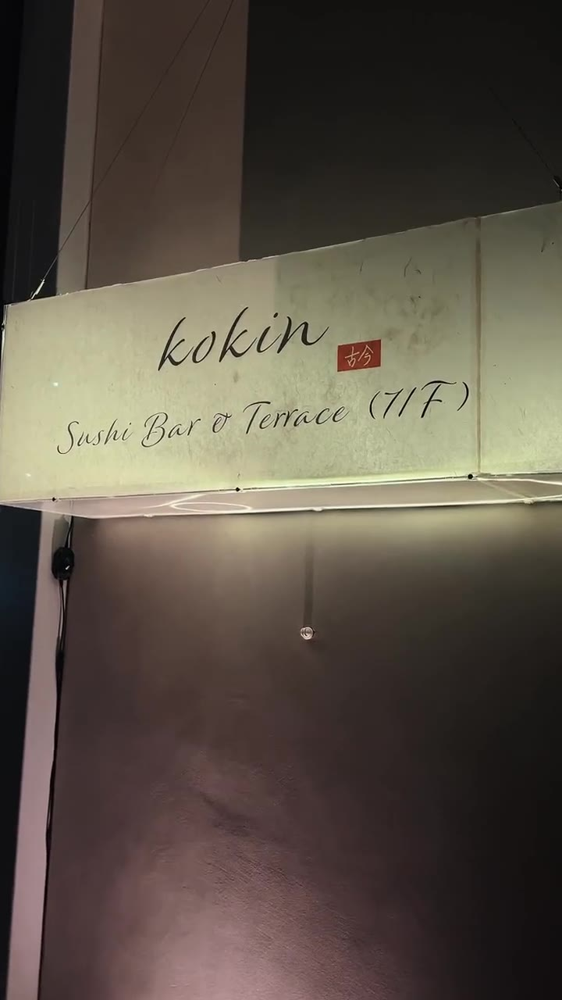

Seven floors above Stratford, with views across East London. Open Tuesday through Sunday for lunch and dinner.
Lunch is served from twelve, dinner from six. We're closed on Mondays to rest and prepare. Last orders thirty minutes before closing.
Stratford is one of London's best-connected neighbourhoods — four minutes to Bond Street on the Elizabeth line, twelve to King's Cross. The Stratford is a two-minute walk from the main station.
Stratford Station — 2 min walk.
Elizabeth line, Jubilee line, Central line, DLR, London Overground & National Rail. Stratford International — 5 min walk.
Paid parking available at Westfield Stratford City (adjacent). The Stratford is located on the Olympic Park side of the station.
Santander Cycles docking stations at Stratford Bus Station and Westfield. Secure cycle parking at The Stratford.
Private rooms, whole-venue buyouts, and chef's tasting menus designed for groups of eight or more. Our team will tailor the evening — right down to the last course.
Enquire about private events